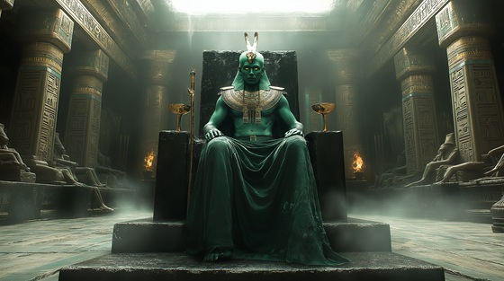

Step into the shadows of the Duat, the Egyptian underworld, and witness the solemn power of Osiris, the god of resurrection, eternal kingship, and judgment of the dead. This epic doom metal track pays homage to the fallen king who became ruler of the afterlife, forever seated on the throne where all souls are judged.
Who is Osiris?
Osiris is one of the most important gods in Egyptian mythology, symbolizing death, rebirth, and the afterlife. Once the divine king of Egypt, he was murdered and dismembered by his brother Seth, only to be resurrected by his wife Isis. Though he could not return to the land of the living, he ascended as the lord of the underworld, presiding over the fate of all souls.
Osiris is often shown as a mummified man with green skin, symbolizing life after death. He sits in the Hall of Judgment, where the hearts of the dead are weighed against the feather of Ma’at. Those found just pass into eternal peace—those who fail are devoured by Ammit.
Osiris: Lord of the Silent Land
Shattered in silence, torn apart
Betrayed by blood, a stolen heart
Bound in linen, cast in shade
Yet from the dark, I rise remade
The Nile weeps, the heavens mourn
But from the tomb, a god is born
The dead await with hollow breath
For I am king in realms of death
Through Duat’s gate, the souls descend
To face my truth, their fates I pen
I am Osiris — the throne below
The judge of hearts, the undertow
My voice commands the final path
Through sacred rites and afterlife wrath
The crown of silence, robed in stone
I reign where all must walk alone
My limbs were scattered in the dust
By kin I loved, betrayed by trust
Yet Isis wept, and stars aligned
She called me back through spell and sign
I wear the green of rebirth's flame
I hold the staff that none can claim
The veil is thin where I reside
A god restored, no longer died
Through Duat’s gate, the souls descend
To face my truth, their fates I pen
I am Osiris — the throne below
The judge of hearts, the undertow
My voice commands the final path
Through sacred rites and afterlife wrath
The crown of silence, robed in stone
I reign where all must walk alone
I see the weight each soul must bear
I speak when Ma’at clears the air
My hand holds balance, sharp and just
The pure shall rise, the vile combust
No king above, no light so high
Escapes the reach of Osiris’ eye
In tombs and chants, I still remain
The soul of Egypt, death’s domain
Through Duat’s gate, the souls descend
To face my truth, their fates I pen
I am Osiris — the throne below
The judge of hearts, the undertow
My voice commands the final path
Through sacred rites and afterlife wrath
The crown of silence, robed in stone
I reign where all must walk alone
From dust to god, from bone to flame
My name is etched in deathless name
When kings fall down, and stars are slain
I rise again, I still remain
So speak my name when twilight calls
Within the crypt, behind the walls
I wait where judgment never ends
I am the god who death defends